Positioning
企业定位
石家庄辰泰环境科技有限公司是一家专注有机溶剂回收治理的高新技术企业，可为不同行业提供绿色化工分离技术，包括精馏分离、萃取分离绿色能源回收系统，H2S尾气综合治理及硫回收，有机尾气能源回收系统，数智化蒸发结晶系统等，并承接EPC总包服务。
Company Profile
根据公司宣传资料整理企业定位、技术路线、发展历程、研发制造能力和合作方向。
Positioning
石家庄辰泰环境科技有限公司是一家专注有机溶剂回收治理的高新技术企业，可为不同行业提供绿色化工分离技术，包括精馏分离、萃取分离绿色能源回收系统，H2S尾气综合治理及硫回收，有机尾气能源回收系统，数智化蒸发结晶系统等，并承接EPC总包服务。
Technology
公司自主创新的气相与液相分离系统融合设计，将废气回收、回收液精制、不凝气处理和能量回用进行系统化规划，实现废水废气达标排放，综合能耗节省40-70%以上。
R&D
公司建有精馏技术研发中心和河北省工业企业研发机构B级中心，组建“化工节能过程集成与资源利用研究室”，可完成流程模拟、实验验证、装备加工、现场安装和工程交付。
R&D Center
团队由化工专业硕士、高级工程师和多年工程现场经验人员组成，围绕精馏分离、液相萃取、有机尾气治理、H2S制硫、蒸发结晶等方向开展工艺研发和工程验证。
研发中心把工况调研、流程模拟、实验分析和设备选型连接起来，为项目从小试、中试到工业化落地提供数据支撑。

Manufacturing
公司配套激光切割、自动等离子焊、管板自动焊、法兰焊、氩弧自动焊、铣刨磨镗钻折弯等加工检测设备，并拥有非标设备制造装配技工队伍。
多支安装队伍覆盖设备、管道、电气仪表、钢结构和自控系统施工，可为全国项目提供成套交付服务。
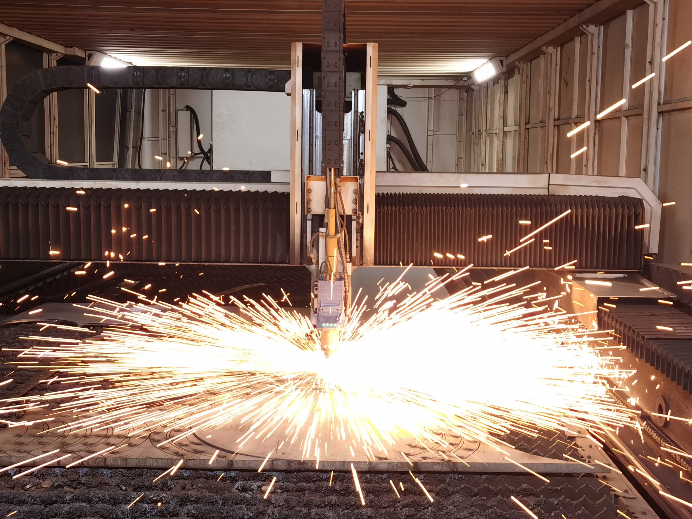
Subsidiaries
面向华东化工、新材料与涂布行业，协同开展项目服务。
承接区域技术咨询、项目沟通与工程支持。
服务装备制造、安装施工与现场维护。
海外业务协同窗口，支持国际化交流与合作。
Quality System
建立“市场需求、技术研发、模拟验证、方案定型”研发质量管控流程，通过方案评审、图纸审核和样机测试，把工艺适配性与技术可靠性前置确认。
关键零部件供应商经过资质审核、样品检验和现场考察，设备焊接、组装、防腐等工序执行标准化作业指导书，确保材质和工艺匹配现场介质。
依托数控切割、自动焊接、无损检测和水压试验等流程，执行自检、互检、专检的过程管控，并建立从原材料到检测数据的追溯记录。
安装前进行技术交底和现场复核，安装中控制设备水平度、管道密封性和仪表联锁，安装后通过连续试运行验证回收效率和环保指标。
建立快速响应、专业服务、定期回访和持续优化机制，提供操作培训、预防性维护建议和工艺参数优化，保障设备长期稳定运行。
Certificates
(1)_01.png)


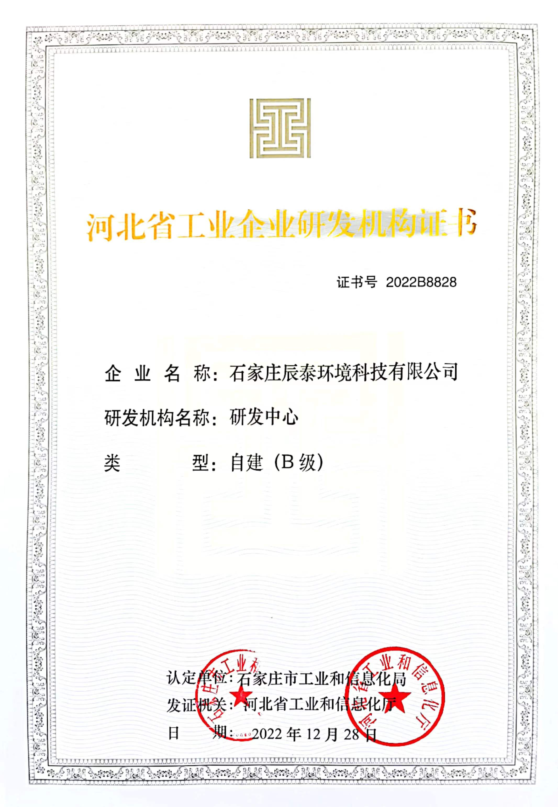
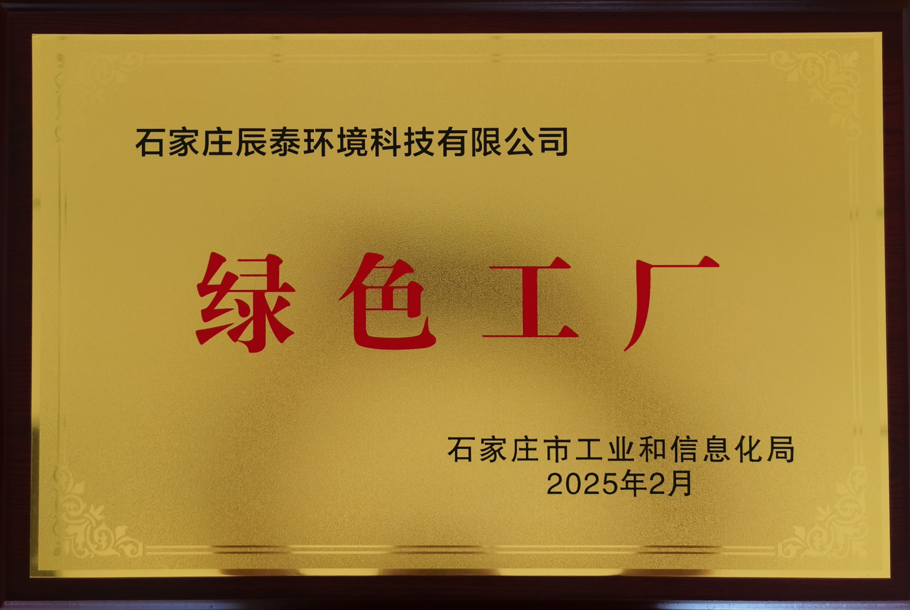

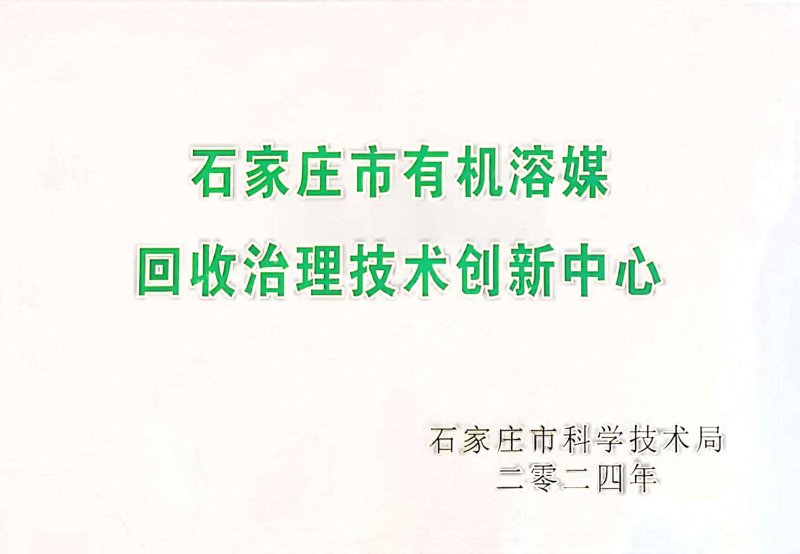
Milestones
公司成立于石家庄市柳董工业区，开始服务国内工业客户。
建立生产基地，具备自主设计和制作能力。
投资购置生产建设用地，筹建综合生产基地。
生产基地主厂房落成并投入使用，销售额突破 3000 万元。
实验中心投入使用，二氯甲烷、白油深度分离中试成功，精馏分离技术完成验证。
与日本大阪燃气建立战略合作关系，取得国家防爆认证资质。
通过高新技术企业资质，获国家科技型中小企业认定。
获专精特新企业认定，取得压力容器相关资质，市级工业研发机构能力持续完善。
乙醚制造系统性整体工程一次开车成功。
高新技术企业和国家级科技型中小企业复审通过，薄膜行业精馏与尾气系统工程落地。
获得市级绿色工厂，取得机电安装贰级、环保工程贰级资质。
Factory & Laboratory

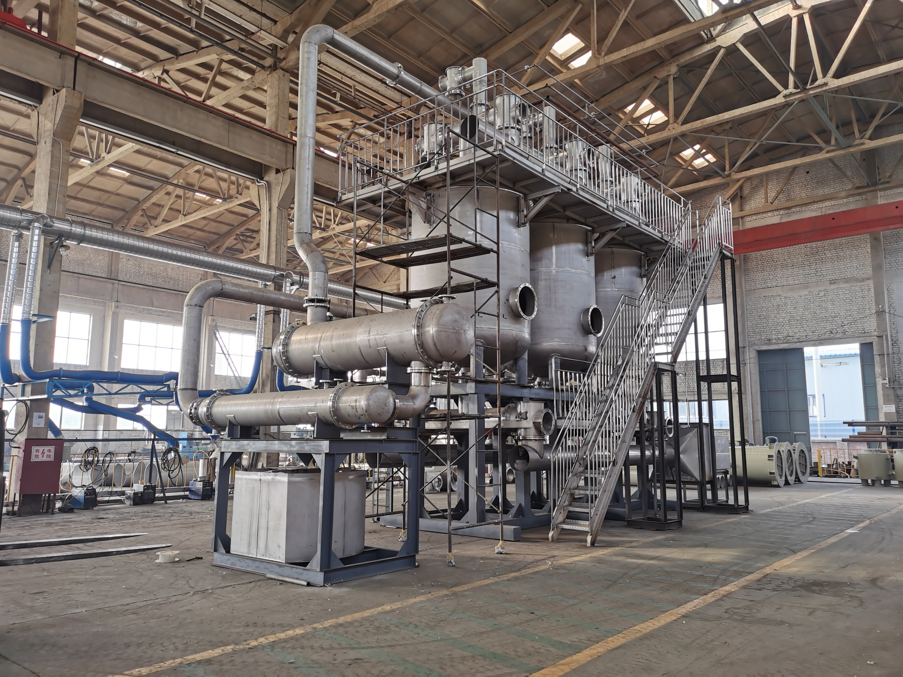
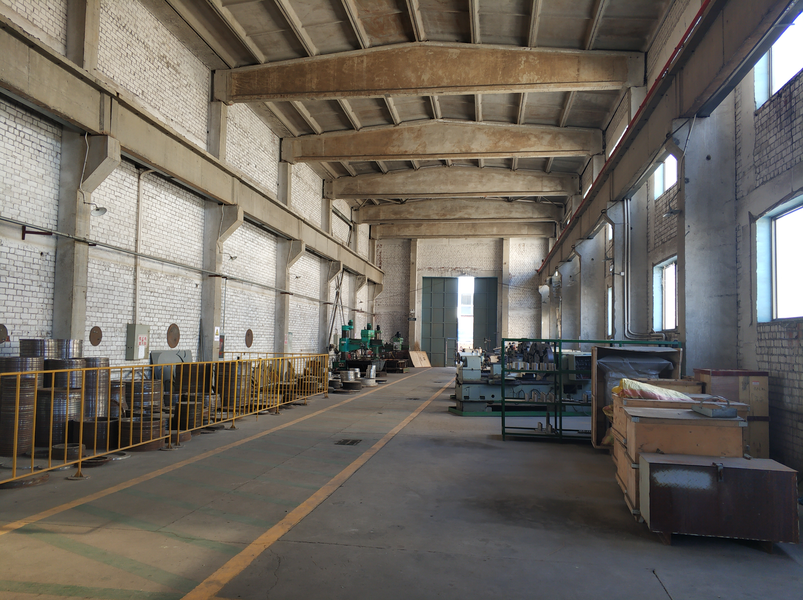
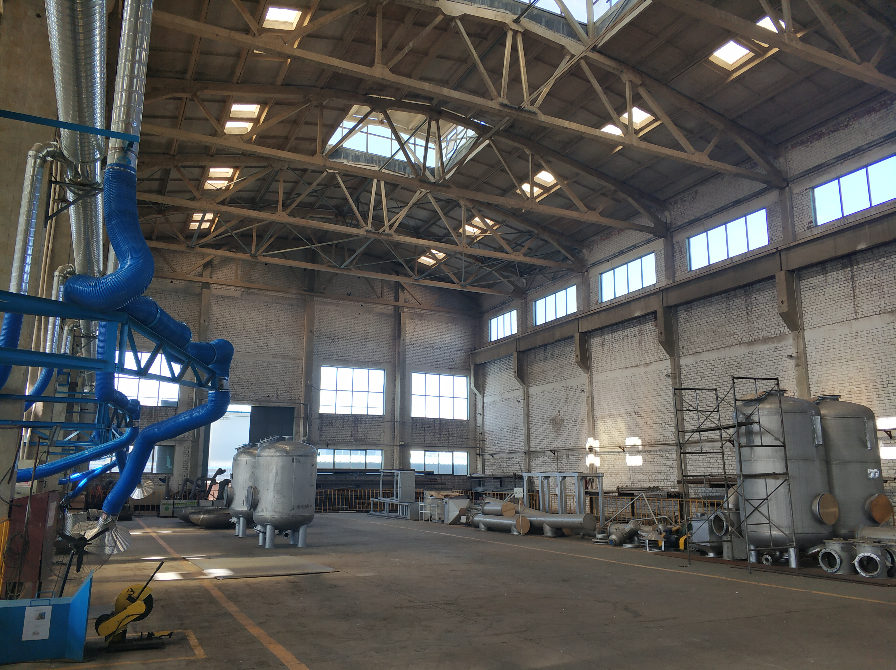
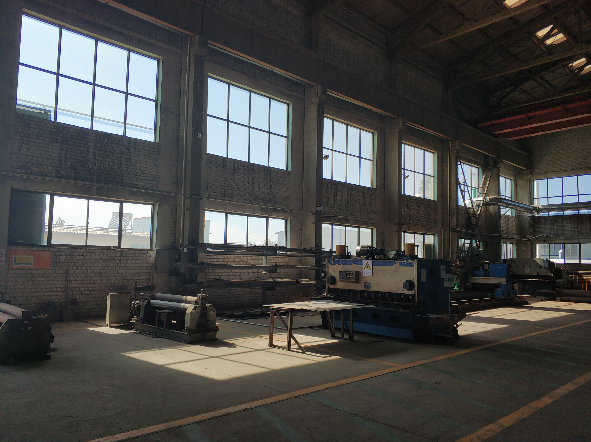
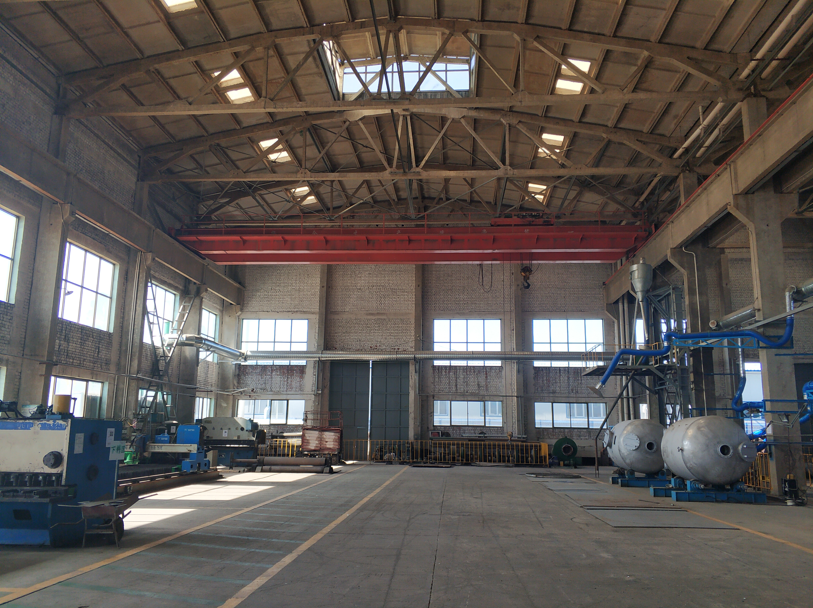
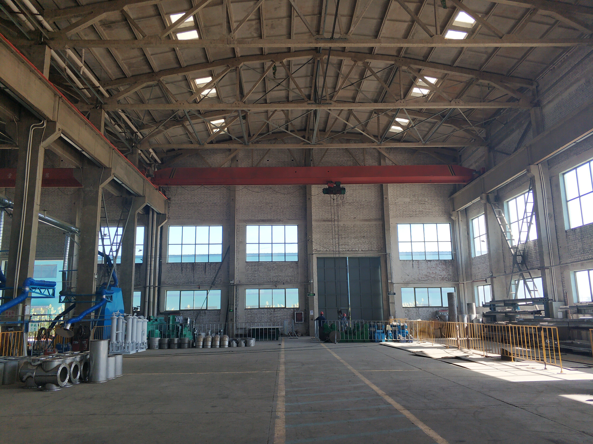
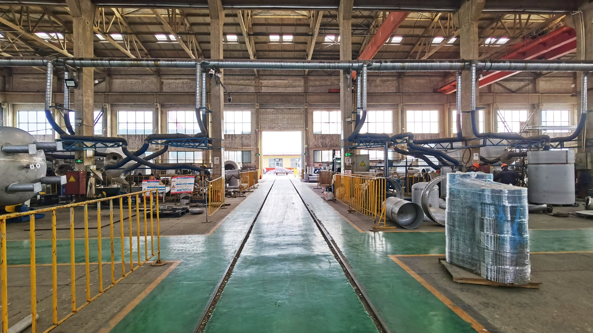


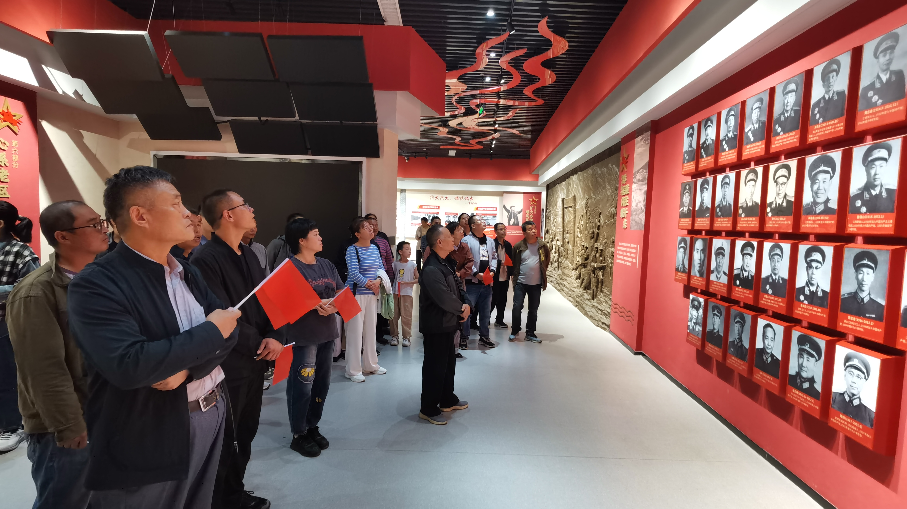

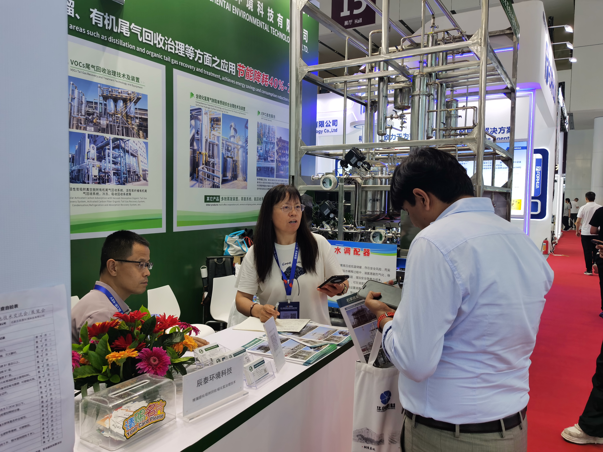
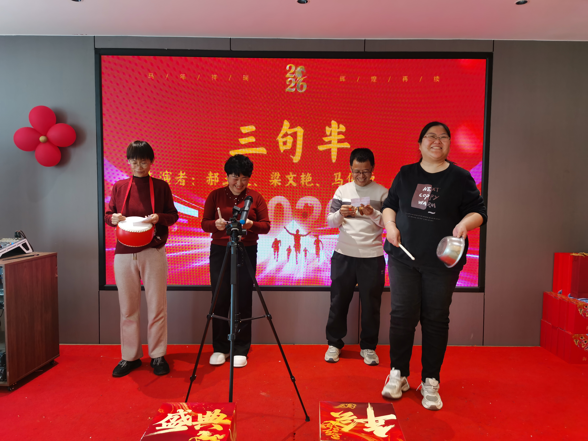